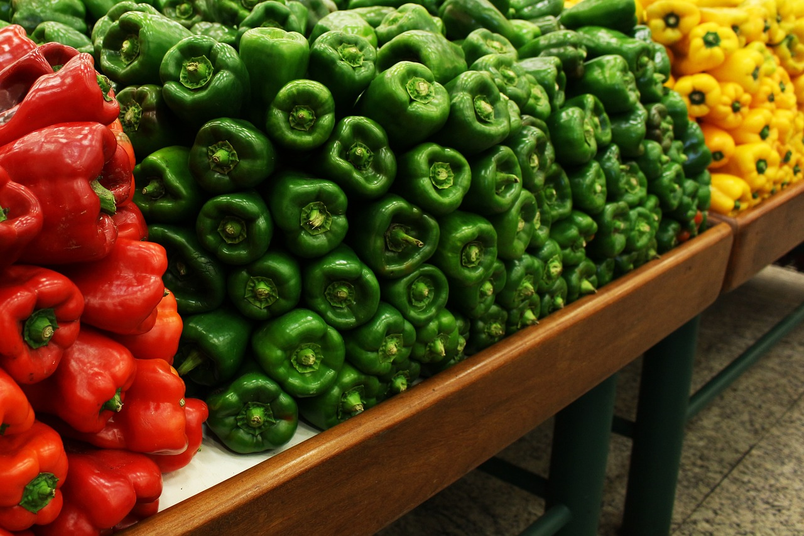
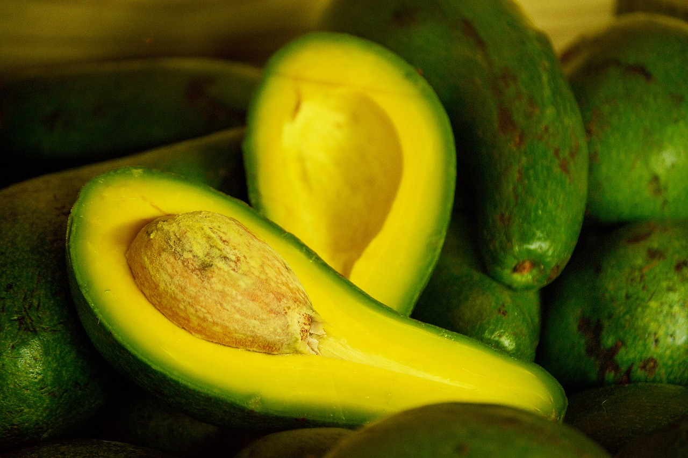

Morrón | ¿Cuál es la diferencia entre el rojo, verde y amarillo?
FOOD LOVERS, 26 May, 2021

El morrón, también conocido como pimiento o ajíes, es una hortaliza rica en fibra, antioxidantes y vitamina C, y es un alimento muy útil para una variedad de recetas. Existen tres colores de morrones, que representan también una diferencia más allá de su estética.
Leer mas
Ajo: propiedades, beneficios y valor nutricional
LÍDIA PENELO, 07 Jul, 2018

El ajo es mucho más que un condimento, es un espantaenfermedades cargado de propiedades nutritivas y beneficios para la salud (los compuestos sulfúricos y sus múltiples fitonutrientes, le dieron esta fama).
Leer mas
Palta: claves para reconocer las buenas y cómo madurarlas
LARISA SERRANO, 18 Jun, 2023

Palta, aguacate, avocado... Aunque se llame de distintas maneras en diferentes países, todos se refieren a la misma fruta, que en Argentina llamamos palta y tiene múltiples beneficios, si se la consume en cantidades apropiadas.
Leer mas